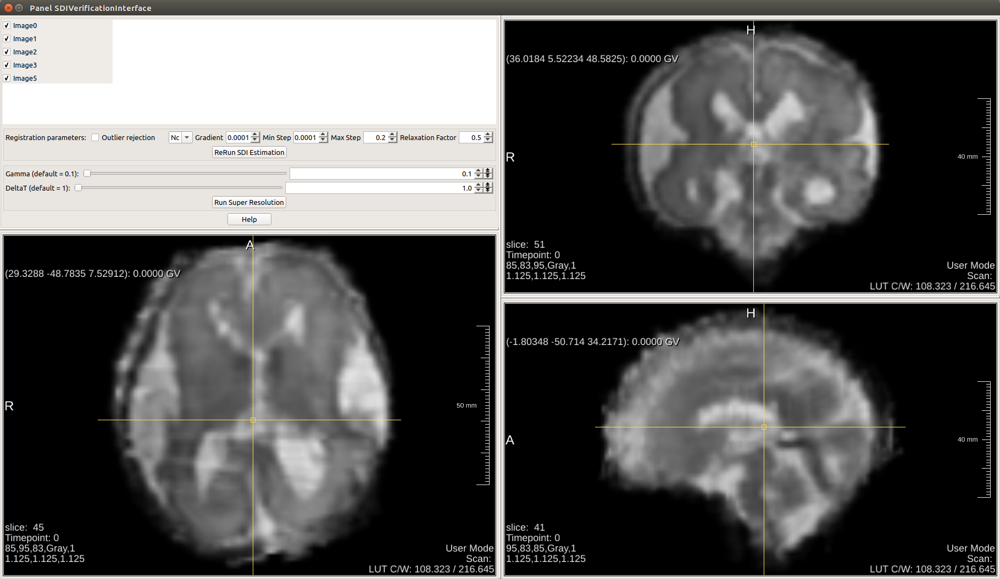

SDIVerificationInterface¶
-
MacroModule¶ author FetalMRIpackage CHUV/FetalMRIdefinition SDIVerificationInterface.def
Windows¶
SDIVerificationInterface¶
Button Description¶
Image X CheckBox
Select image number x for SDI Estimation and/or Super Resolution. Images unchecked won't be used.
Registration Parameters
By default parameters. Works most of the time, do not change at first trial. MI Registration is way slower. If SDI doesn't look good. first trial is to change the reference images or to remove one of the images for the stack
Image X CheckBox
Select image number x for SDI Estimation and/or Super Resolution. Images unchecked won't be used.
Parameter Fields¶
Field Index¶
Delta T: Float |
Registration Min Step: Double |
ExpertMode: Bool |
Registration Relaxation Factor: Double |
Gamma: Float |
|
NumberImages: Integer |
|
Outlier Rejection: Bool |
|
Registration Gradient: Double |
|
Registration Max Step: Double |
|
Registration Metric: Enum |